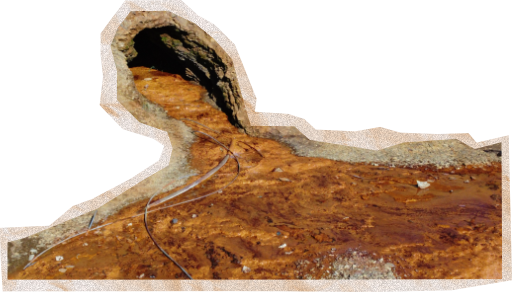
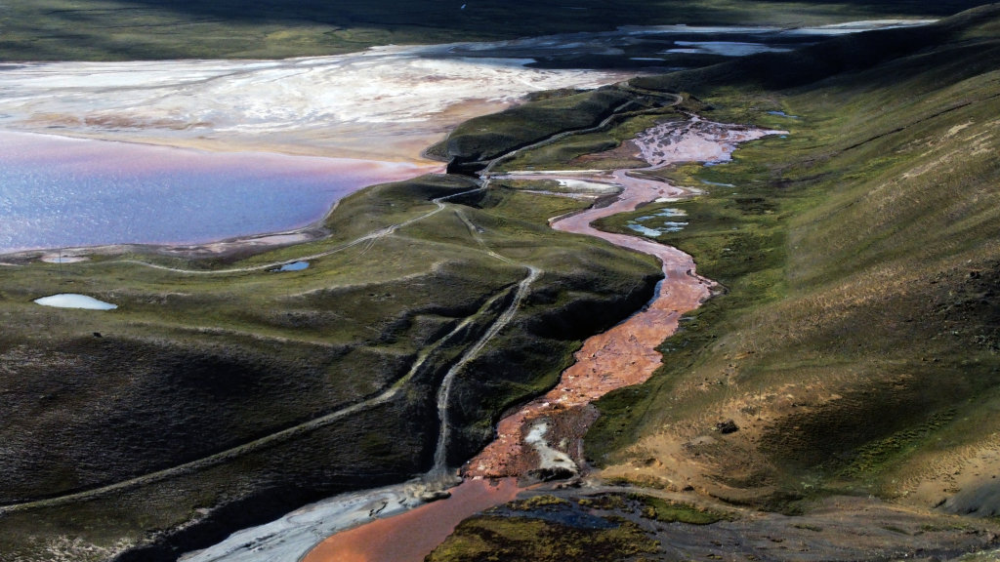
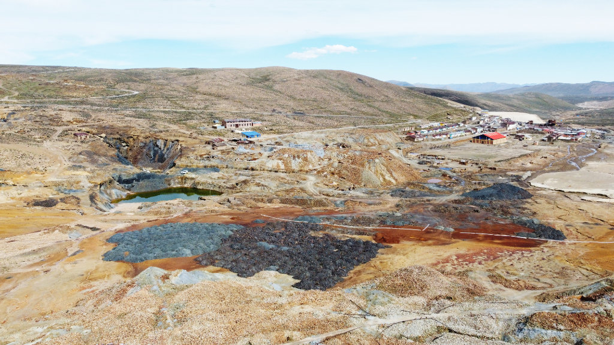
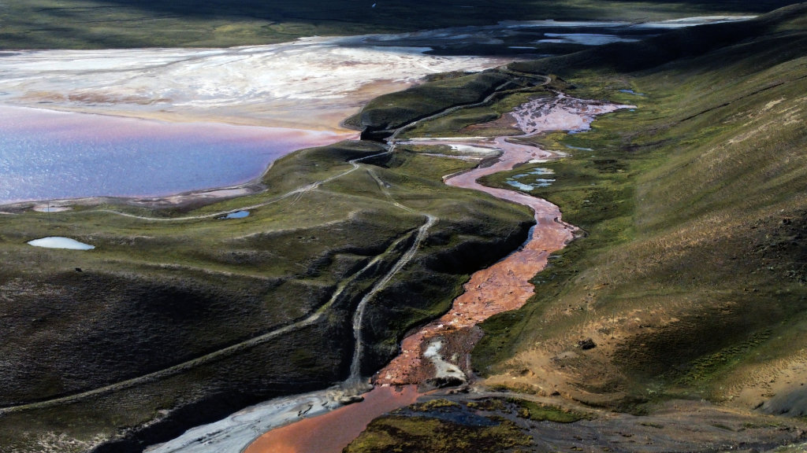
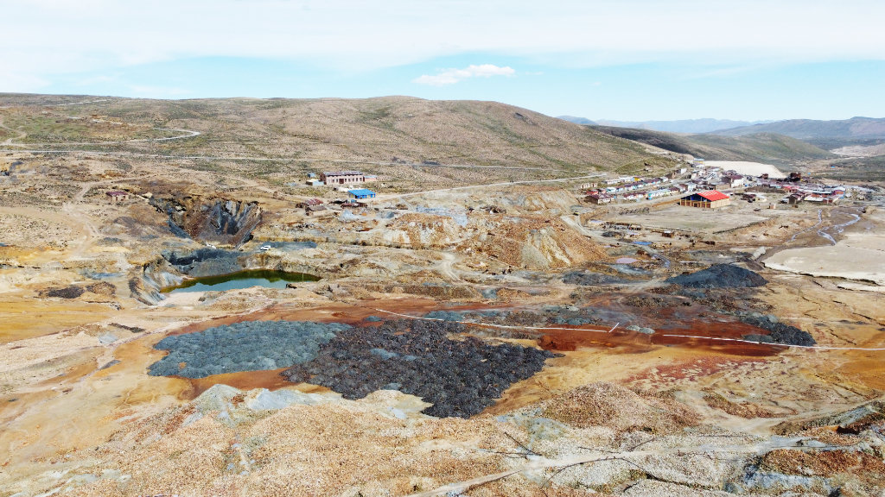

Bolivia, el país de la tierra envenenada
Más de un millar de pasivos ambientales mineros se extienden por la mitad del territorio boliviano. La remediación es una cuenta pendiente por vacíos legales y normativas ambiguas que dejó el Estado. El saldo son pobladores intoxicados con metales pesados en su organismo, pues, 326 comunidades colindan directamente con estos desechos y también cerca de 400 fuentes de aguas superficiales; de las que el 99% de las sometidas a estudio de laboratorio fueron contra todo pronóstico, superaron niveles de contaminación previstos en la normativa boliviana, afectando así su biodiversidad.
Por: Daniel Rivera Matirayo
Elva Arando ahora tiene 46 años, creció frente a una montaña de 4,3 millones de toneladas de residuos mineros; es el depósito San Miguel de Cantumarca en Potosí, Bolivia. Este es uno de los 1.188 pasivos ambientales mineros inventariados por el Estado. Aquí, en medio de la ciudad, el cierre perimetral de estos tóxicos consiste en unos postes de madera de metro y medio de altura y un alambrado, como si se tratase del lindero de una chacra, pero en realidad contiene cargas sulfurosas y óxidos con contenidos de cuarzo, pirita, esfalerita, galena, calcopirita pero también plata, plomo, estaño y zinc, todos, nocivos para la salud y el medio ambiente.
Ella viste unas botas café y mientras camina pisa una mezcla de material marrón y amarillo aceitoso que se ha acumulado al costado de la Ruta Nacional 5. La lluvia arrastra el contaminante por la carretera que une la ciudad imperial con el majestuoso Salar de Uyuni. A un costado, una quebrada de agua oscura se escurre entre las piedras que también han quedado pintadas color óxido.
Elva dice que en el pasado sus abuelos y los de la época permitieron instalar ese depósito ante la necesidad de dos piletas públicas de agua, sin pensar que con los años, este y otros pasivos mineros de la zona se convertirían en el verdugo de sus hijos y nietos, como ella, que ahora tiene 4 miligramos de plomo en su sangre. Y es que, el millar de pasivos ambientales extendidos en Bolivia tienen como colindantes a 326 comunidades, las cuales fueron detectadas mediante imágenes satelitales para esta investigación; parte de ellas se ha demostrado científicamente que su gente está afectada por metales pesados en su organismo.
San Miguel no es el único problema de Cantumarca. A unos dos kilómetros hacia el oeste está Laguna Pampa I y Laguna Pampa II, otro depósito de residuos mineros. Hay caseríos alrededor, pero es como estar en un desierto de tierra plomiza con cúmulos de agua, verdosa, marrón o anaranjada dispersas por todos lados, tuberías en desuso botadas a un costado, volquetas que entran y salen del lugar y un viento de abril que levanta partículas de polvo contaminadas y las esparce por el vecindario. Diez minutos son suficientes para salir con los ojos rojos y un escozor en la garganta, como si hubieses tragado gas pimienta que usa la policía en una represión, pero esta gente no cometió delito alguno. Aquí, no se requiere pasaporte para entrar al inframundo, se nace y vive en él.
En los últimos 22 años, entre el Gobierno nacional, gobernaciones y alcaldías recibieron más de 4.349 millones de dólares por concepto de regalías e impuestos mineros, mientras que los operadores han producido minerales valuados en más de 30 mil millones de dólares. Sin embargo, el Estado no ha invertido en la remediación de los pasivos ambientales y ha permitido vacíos legales que dilatan una solución a este problema. Ellos ganaron, pero campesinos e indígenas se quedaron con los desechos mineros que los exponen a un lento envenenamiento, además, cerca de 400 fuentes hídricas están amenazadas por estos tóxicos; de una treintena de ellas está demostrada su afectación, son prácticamente ríos muertos.
Mapa de comunidades afectadas por pasivos ambientales
Fallar a propósito
Para Alfredo Zaconeta, investigador del Centro de Estudios para el Desarrollo Laboral y Agrario (CEDLA), diferentes gobiernos de turno, sin importar la línea política, dejaron vacíos legales sobre quiénes deben hacerse cargo de los pasivos ambientales históricos. El último Gobierno no es la excepción, porque la Ley de Minería que rige desde el 2014 tampoco lo establece, si bien indica que los operadores destinarán un monto de sus utilidades para el cierre (mitigación ambiental), no especifica qué porcentaje y nadie supervisa.
El descuido no sólo está en los pasivos históricos, sino también de los que están en operación, porque las cooperativas concentran el 56% de los contratos mineros y para el caso del oro el 99,6% de la explotación estuvo en sus manos. Lo paradójico es que este sector nunca declara utilidades, por lo cual, no están obligados por ley a destinar fondos para el saneamiento del lugar luego de concluir con la explotación de minerales.
Hasta ahora, el Gobierno ha creado su propio laberinto para la regulación. Primero estableció el Programa Nacional de Restauración y Rehabilitación de Zonas de Vida (PRONARERE) y luego el proyecto Bol/91196 de “Gestión de Pasivos Ambientales Mineros en Áreas Protegidas y su influencia en el recurso hídrico”. El primero nunca funcionó porque no asignaron recursos económicos entre 2016 y 2020, mientras que el segundo logró una metodología que permitió evaluar y priorizar la afectación en ocho áreas protegidas, pero no ejecutaron obras de mitigación, según constató una auditoría ambiental de la Contraloría General del Estado (CGE).
Y entre ellos está la dilatación, el Ministerio de Minería también desarrolló una propuesta de “Procedimientos para la Gestión de Pasivos Ambientales Mineros”; pero el 2020 fue el Ministerio de Medio Ambiente y la Corporación Minera de Bolivia (Comibol) los que hicieron observaciones. Ese mismo año esta cartera de Estado tenía una propuesta de ley que ingresó a una revisión que parece perpetua, como también un reglamento de pasivos ambientales históricos; documento que fue desestimado.
Para Gonzalo Mondaca, investigador del Centro de Documentación e Información Bolivia (CEDIB), la dilación sobre la regulación de pasivos ambientales no es casual, porque los mineros siempre fueron socios del Gobierno de turno, principalmente del Movimiento Al Socialismo (MAS), un ejemplo de ello es que el actual ministro de Minería viene del sector cooperativista. Pero también hay otros en cargos de decisión importantes, como en el legislativo nacional, departamental y municipal, donde aprovechan para frenar cualquier normativa que vaya a regular su actividad.
Gerardo Zamora, doctor en ingeniería metalúrgica y medio ambiente minero, explica que mediante investigaciones determinaron que de todos los pasivos ambientales entre el 10 y 15 % son materiales con sulfuros que necesitan un tratamiento de rehabilitación. Por lo cual, su propuesta es que los operadores, antes de la disposición final, realicen la desulfurización, de manera que obtengan un 85% de residuo inerte y pueda ser usado como geomembrana, lo que abarataría el costo de remediación de pasivos ambientales, de 0,57 millones de dólares por hectárea a 0,19 millones de dólares.
La salud afectada
Vicente Arando, un tipo de tez colorada y su bastón de cacique que cabe en su morral, sabe bien que en Cantumarca la desgracia está en los pasivos ambientales mineros, porque de 116 personas sometidas a pruebas de laboratorio, el 85% tenía niveles de plomo en su sangre, unos con mayor grado de intoxicación que otros. Esos test no los fue a realizar el Ministerio de Salud o el Servicio Departamental de Salud ni alguna institución de medio ambiente, ellos mismos lo han gestionado porque el Estado siempre estuvo ausente. Estas entidades más bien les han cuestionado el por qué se hicieron esos estudios y pedían que les expliquen quién les dio la autorización.
Jael Aquilar, quien lideró al toma y procesamiento de muestras de sangre de estos pobladores, precisa que los pacientes estudiados no trabajan ni tienen familiares que laboran en las minas, son personas que se dedican a otra actividad pero que viven en zonas de influencia del depósito de Laguna Pampa I y II.De los estudiados, la afectada más joven tiene 2 años con una presencia de plomo de 14,2 miligramos por decilitro de sangre, mientras que la mayor tiene 81 años y tiene 21,4 miligramos de este metal.
Los vecinos encaran una lucha desde el año 2013, cuando debía cerrarse ese depósito, pero fue hasta el 2023 cuando el Tribunal Constitucional Plurinacional les concedió la tutela de tres pedidos; que ya no se depositen más residuos en ese lugar, hacer el cierre del sitio y el resarcimiento a la tierra. La justicia dio un plazo al operador minero hasta el 29 de junio de 2024, pero el Ministerio de Medio Ambiente desafió a ese poder del Estado ampliando el permiso por un año más de operación.
A 311 kilómetros de este lugar, en Oruro, el doctor Jacquez Gardon, el 2009 ha liderado una investigación sobre afectación de metales pesados en humanos. Por la zona de San José, detectaron que el principal medio de contaminación era por la acción mecánica del viento, transportaba partículas de polvo y tierra con contenidos metálicos de plomo, arsénico y cadmio. De 199 niños a los que se les tomó muestras de cabello, el 25% presentó niveles de plomo por encima de lo que establece la Organización Mundial de la Salud (OMS), además de tener afectación al nervio óptico y disminución del aprendizaje.
En este sector, que también está dentro de la ciudad de la capital de este departamento, aún hay nueve pasivos ambientales mineros a cielo abierto, en frente una unidad educativa y un mercado barrial.
Estos son dos casos concretos en los que se demostró una afectación a la salud por parte de residuos mineros, pero para esta investigación periodística mediante imágenes satelitales se detectó que 326 comunidades están dentro del radio de un kilómetros de los 1188 pasivos ambientales mineros. Según el médico Gardon, el Gobierno debe invertir en investigaciones para determinar en qué grado está afectada esta gente o si finalmente no tienen ningún riesgo, porque luego se desarrollan enfermedades que no solo son una carga familiar, sino también para el Estado.
 




Agua contaminada
A unos 24 kilómetros de la ciudad de La Paz, luego de atravesar unos cerros llenos de paja brava característico del altiplano, se encuentra la laguna Milluni. Aquí está una de las escenas más contrastantes de la contaminación por pasivos ambientales mineros. A un costado del camino vehicular, una bocamina arroja incesantemente un líquido color óxido que luego tiñe este espejo de agua. Pero como si no fuese suficiente, a unos 200 metros hacia el norte desemboca el río Milluni, este también viene cargado de los mismo tóxicos y arrasó con todo a su paso, no es posible la vida acuática ni para la flora ni fauna, hasta las piedras quedaron de color anaranjado obscuro.
Hugo Cardenas, conoce bien esta zona, porque ha investigado la actividad minera como docente de la Universidad Mayor de San Andrés. Plomo, plata y zinc, es lo que se ha explotado por unos 50 años sin el componente ambiental, además al no haberse realizado un adecuado cierre de operaciones, calcula que esta laguna recibió más de un millón de toneladas de colas y desmontes. Es por eso que en esta cuenca han desaparecido especies nativas.
“La flora ha muerto y la fauna también, porque los animalitos al no tener algo para comer empiezan a escapar. Ya no hay vizcachas, no hay roedores, no hay mamíferos, reptiles, lagartijas, animales que son típicos de la zona del altiplano. Los que se dedicaban a criar animales o la agricultura, se vieron forzados a cambiar esa actividad por el turismo hacia los cerros nevados”, comenta.
En esta zona, el Servicio Geológico Minero (Sergeomin) realizó un monitoreo de calidad de agua, de 26 muestras tomadas 13 fueron clasificadas como de cuerpo D, que dentro de la Reglamentación de la ley de Medio Ambiente, significa que no sirve ni para contacto humano. Un similar resultado se tuvo para otros 32 centros mineros donde se ha estudiado el agua de los afluentes, solo en Illampu tiene una calcificación de tipo B, considerada como buena y no requiere de tratamiento.
Para esta investigación también se ha detectado mediante imágenes satelitales que, el millar de pasivos ambientales inventariados en Bolivia amenazan a 379 fuentes de agua, como ríos, quebradas, lagunas y lagos. Por lo que es necesario también un monitoreo.
En el caso del lago Poopo, el segundo más importante de Bolivia, por día recibe 3 millones de kilogramos de sólidos suspendidos, como cloruros, zinc, arsénico, cadmio y plomo, según una investigación de la Universidad Técnica de Oruro (UTO).
El río Suches, que nace en el norte de La Paz a través de la laguna del mismo nombre, también tiene en su cuenca 13 pasivos ambientales mineros. Este afluente que desemboca en la localidad de Sañuta por el lago Titicaca, sorprendió a Johnny Franco una tarde de marzo de 2024, pues encontró ranas muertas y otras moribundas al borde del lago, un evento nunca antes visto en su experiencia de pescador.
Desde el Ministerio de Medio Ambiente le han dicho que pudo ser la crecida del río, pero él desconfía de esa teoría porque no es la primera vez que ese afluente tiene ese comportamiento y nunca antes ha dejado mortalidad de anfibios. Sospecha de una acumulación de residuos mineros que llegan desde aguas arriba, pero que el Gobierno quiere no quiere aceptar para ocultar la falta control y mitigación de pasivos ambientales.
Redacción periodística:
Daniel Rivera Matirayo
Procesamiento Sistemas de Información Geográfica:
Abigail Roque
Desarrollo y armado web:
Alex Ojeda Copa
Diseño gráfico e ilustraciones:
Valeria Peredo
Apoyo editorial y multimedia:
Equipo CONNECTAS